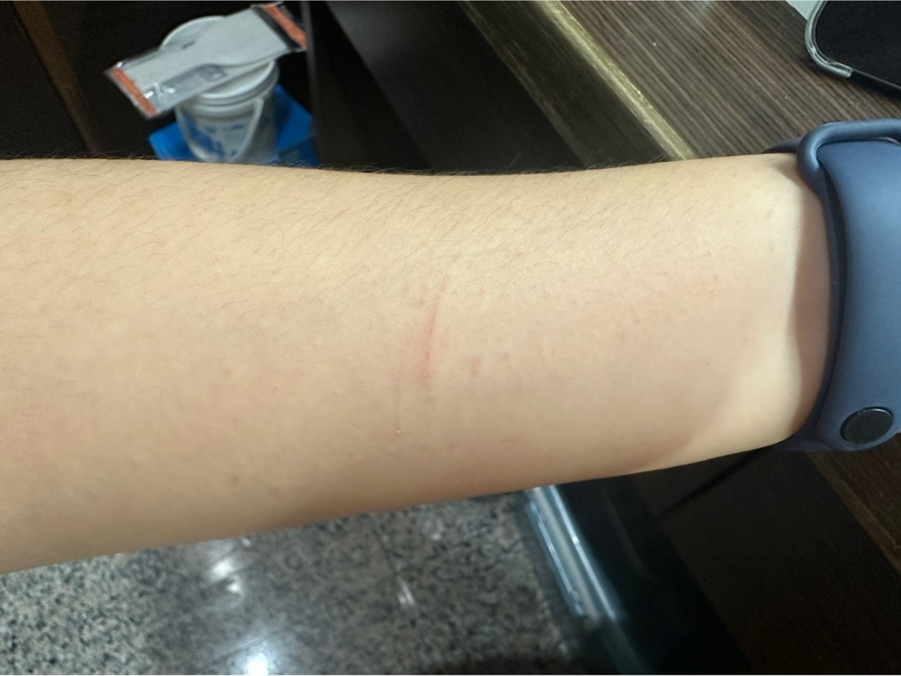

-養蜜的十二心理準備-
【第一點】
蜜是夜行性動物，半夜可能會吵 (汪汪叫)。
如果你或你的家人很淺眠或住的地方隔音不佳，鄰居很容易被干擾，都請三思。
【第二點】
飲食方面並不是只要餵牠們飼料和水就好了，牠們需要多種營養與不同的食物種類。
需要準備不同的水果，蔬菜，雞肉，和一些其他的食物。
【第三點】
蜜是會咬人！而咬多大力，就看情況了...
情況1-如果牠和你不熟，蜜會因為害怕而產生攻擊行為，這一口下去，應該是會濺血。
(小提醒：如果牠都嘎嘎叫了，建議就讓牠冷靜一下)
情況2-如果你要牠做的事牠不想做 ，牠可能會輕咬一下，表示不爽。
(例如牠要往東，你硬要牠往西。或是牠想睡覺，你就白目把牠挖出來)
情況3-看你的手指／鼻頭好像很好吃....
(即使和小蜜已經很熟了但在玩的時候，小蜜抱著您的手指，玩一玩，舔一舔，再咬下去！都是會發生的)
【第四點】
蜜袋鼯的壽命可以長達十年以上。如果無法飼養牠們長達十年以上，則不建議飼養。
(很重要!!!!)
【第五點】
養蜜，家裡可能會有味道！(味道多重，就要看家裡的通風程度，和清理的勤奮程度了。)
【第六點】
蜜無法被訓練成像狗那樣，可以一個口令一個動作，也不太會聽話。
【第七點】
蜜袋鼯是群居動物，建議至少養２隻以上。
【第八點】
蜜每1~2星期需要剪指甲。如果因為怕麻煩而不幫牠們剪指甲，手應該會像被家暴一樣，被抓得一條一條的，甚至產生紅腫。(如圖)
【第九點】
蜜基本上無法訓練定點大小便。所以牠們出來放風時，會到處，甚至在身上和頭上大小便，都是正常的。
【第十點】
蜜需要放風時間和空間，而不是一直養在籠子裡。
【第十一點】
如果要在室內放風，請確定門窗有關好，門縫也有擋住。
如果要讓蜜在整個家裡自由活動，建議不要放蟑螂螞蟻藥，馬桶在沒有使用時也要蓋上。
【第十二點】
建議定期帶牠去做健康檢查，每次費用約$400，藥物另計